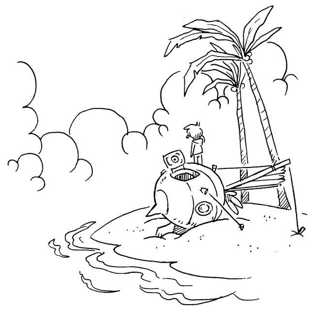

Now lie in it.
Autumn is just around the corner, and when the leaves begin to fall, it will have been four years since the early sketches of a personal computing system which became Uxn. I thought it would be interesting to look back and see what has happened since.
What problem was it supposed address?
Uxn was designed explicitly to be a minimal bytecode target capable of preserving a handful of our projects, and to be flexible enough to accommodate the ones we had yet to make, in a way that would be portable and robust against bitrot.
In regard to preservation, time will tell if it was a success, but I can say that it has taken 3 years for the ISA to be frozen, and the tail end of that period only saw subtle changes that did not impact the projects made in the first two. The remaining work during that time was primarily finding, documenting and testing against the remaining undefined behaviors.
During these four years, I have seen countless developers successfully implement the runtime from scratch without my help; this is giving me hope that for as long as the documentation survives, developers can create new emulators as the hardware platforms and operating systems continue to evolve.

It is probably power hungry
Uxn, in part, was meant to help us reconcile the power-hungry tools we used with the energy we could harvest from the solar generated aboard our small boat. It is commonly understood that virtual machines are inefficient, I went ahead knowing that it might be self-defeating to target a virtual machine in which transformations are so granular that it would be hard for the host machine to optimize for.
In that way, Uxn is tolerably impractical, but it is also only one part of a larger gesture towards reducing the strain on that resource, which requires more than just putting a virtual machine at the center of it all; what was possible to do on paper, outside the browser, or natively, was thereafter done that way, but a few of our projects were still inextricably linked to portable graphical applications.
Uxn might have helped a bit, but only so much; for instance, the text-editor with which I am typing this article and use to do near every computery-thing, uses dramatically less energy than what I used previously. But I wouldn't attribute any noticeable power gain to the application running as a rom or natively. As a target, it shines most brightly in helping me to reduce the cost of iterating during software development itself, say we compare the minuscule drain of assembling a rom in comparison to rebuilding a native graphical application or reloading a webapp.
It doesn't solve a real problem
I am not convinced that computers solve any real problems either. Asking a room full of software creators "what are computers for anyways?" will get you little beyond vague suggestions of bureaucratic utility, which leads me to question whether bureaucracy is solving any real problems, and so on, ad absurdum.
But if we are to put any value in preserving digital art, music, video games and other distractions from the very real problems that basic needs demand, it might be worthwhile to address the problem head-on, and to encourage piracy at a massive scale, by duplicating digital content locally, to give data a chance to survive moving forward. Cloud platforms have all to win by making us forget that we can utilize a specific length of bytes without their saying so, and emulation is just one of many ways of exploring this issue.
The problems it is trying to solve are self-inflicted
There is a time immemorial tradition of discriminating against the various flavors of nomadic vagabonds living in tents, cars, canal boats — we are not exempt from that. On discussion forums, the economics of living on the water without a permanent address seem to elude most people, leaving them to believe that this way of life is something only the wealthy can do, that being in it is necessarily a deliberate choice untied from economic realities and that we somehow reside outside the boundary of whom deserve to be heard.
I don't think that our changing reality was what catalyzed my search for alternatives, but it might have precipitated it. At that time, browsers hadn't started force-feeding AI assistants, but it was already many years into Apple devising new ways to sabotage the repair of devices; it was becoming obvious that my choice to target the modern web browser for my little graphical toys was a vote against decentralized general purpose computing, and one for its homogenization by companies that were increasingly antagonistic to our situation.
Four years ago, had our situation been different, I don't know that I would have decided to stay with either iOS or web development. But even now, being more familiar with the landscape, I am not sure that making use of pre-existing systems would have been viable solutions for where we were trying to go.
It is too complicated, or not complicated enough
I noticed that Uxn attracts both esoteric and practical individuals. The esoteric crowd looking at the Uxn specifications are rapid to point at various alternatives for which very little software exists, and the practical ones, at the limitations and ways in which it is deficient, "the memory is too small," "the opcodes too few," "stack machines are too slow", and so on.
c 00:00.998458 haskell 00:02.870586 gforth 00:13.428614 > uxntal 00:15.861439 lua 00:16.727872 ruby 00:21.418707 python 00:32.362443 tak()
Fortunately, I have seen people come around after looking back at the typical projects that they enjoy doing, and how they can do them comfortably with less means, but there is no denying that Uxn has a specific scope in mind which does not accommodate all projects. That was never really its intended purpose, it has many times over been successful in, not acquiring users, but getting developers to explore their own visions and finding joy there.
Was it all worth it?
Is it worth it to spend hundreds of hours to save what must amount to much, much, less? It depends, if you think too much about where you're going, you might lose respect for where you are. I have friends who were complaining about a tool in 2020, they still are today; their throughput would not be much improved had they spent a years detouring to rebuild a whole tech stack. For others, who see their ideals and tools diverge, it might be encouraging to see prior explorations in that space; to those, I can only say that it is very unlikely that you will see building an environment that respects your values and idiosyncrasies as a waste of time, it might even bring you closer to others sharing in your struggles and who might become your friends.
Four years ago, I had doubts that it would work out, but time flies when you're having fun!

Special thanks to Rek, Alderwick, Sigrid, Cancel, badd10de, Bellinitte, Eiríkr, Tbsp, Wim, zzo38, Kragen, Kira, Snufkin, Virgil, SL, Sejo, gustav, soxfox, and many more.
incoming: devlog